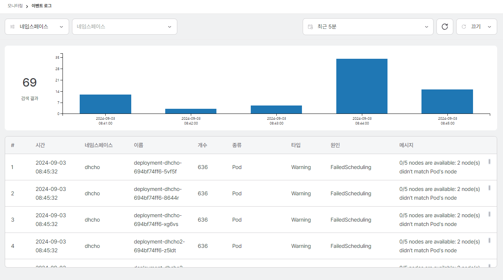
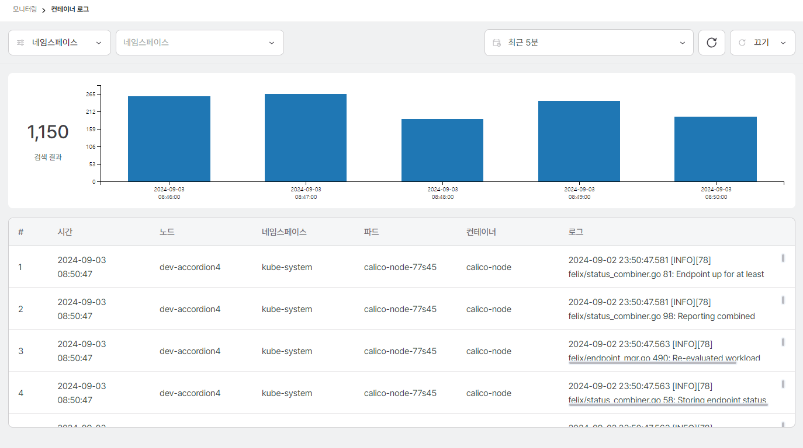
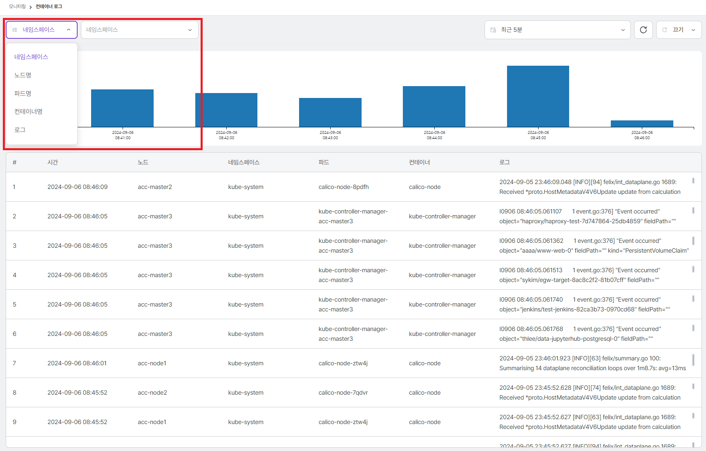
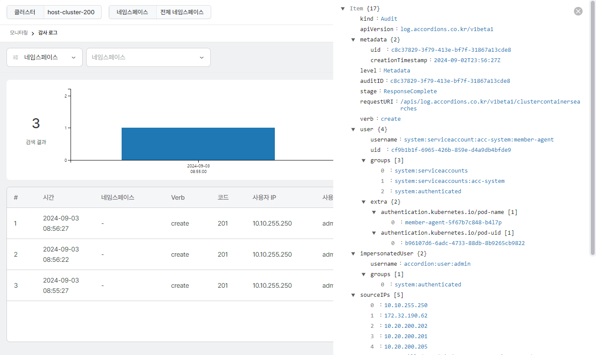
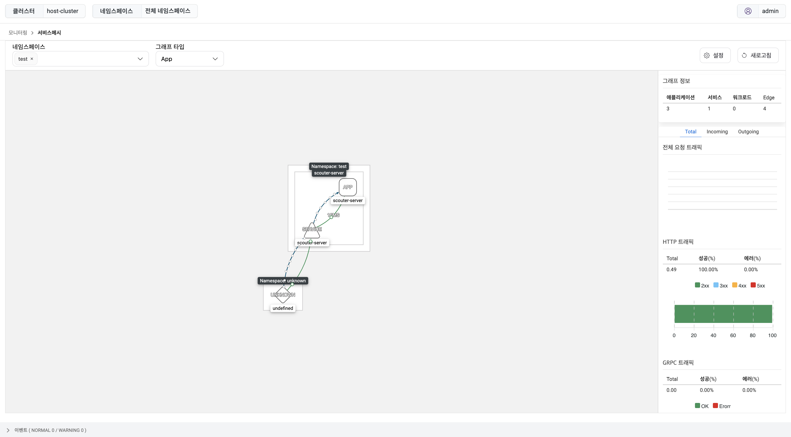

모니터링
모니터링은 클러스터 별로 모니터링을 제공한다. 모니터링은 시스템 정보와 이벤트 로그, 감사 로그, 컨테이너 로그 등의 로그 정보 및 서비스 트래픽 정보에 대한 서비스 메시를 제공하여 운영자가 Accordion 내의 클러스터와 애플리케이션을 다양한 관점에서 모니터링하여 안정적인 시스템 운영할 수 있도록 한다.
모니터링 지표는 시간 별로 검색이 가능하며 아래의 두가지 방법과 같다.
첫째, 최근 시점부터 시간 간격을 설정하여 모니터링 데이터를 확인할 수 있다. 기간은 현재 시점부터 분단위(5,10,30), 시간단위(1,3,6,12,24), 일단위(2,7)로 지정할 수 있다.
둘째, 직접 설정하기를 선택하여 원하는 검색 날짜/시간의 정보를 확인할 수 있다. 시작 시간 캘린더에서 시작날짜를 선택하고 종료 시간 캘린더에서 종료날짜를 선택한 후 설정을 클릭하여 원하는 검색 기간을 적용한다.
시스템
클러스터에서는 기준에 따라 개요, 파드, 노드, 네임스페이스, 디플로이먼트, 스테이트풀셋, 데몬셋, GPU 에 대해 모니터링 지표를 제공한다. 그 중 개요 는 클러스터 전체 및 모든 네임스페이스에 대한 리소스 사용률 정보를 제공한다.

호스트맵
클러스터 내 노드와 관련한 정보 및 동작중인 노드, 파드, 디플로이먼트, 스테이트풀셋, 데몬셋에 대한 정보를 보여준다.
자세한 내용은 다음과 같다.
| 항목 | 설명 |
|---|---|
노드당 동작중인 파드의 수 |
클러스터 내 노드 내 동작중인 파드의 개수를 보여준다. |
노드당 CPU 사용률 |
클러스터 내 노드 내 CPU 사용률을 보여준다. |
노드당 동작중인 컨테이너의 수 |
클러스터 내 노드 내 동작중인 컨테이너의 수를 보여준다. |
노드당 메모리 사용률 |
클러스터 내 노드 내 메모리 사용률을 보여준다. |
동작중인 노드의 수 |
클러스터 내 노드의 개수를 보여준다. |
동작중인 파드의 수 |
클러스터 내 파드의 개수를 보여준다. |
디플로이먼트 |
클러스터 내 디플로이먼트 개수를 보여준다. |
스테이트풀셋 |
클러스터 내 스테이트풀셋 개수를 보여준다. |
데몬셋 |
클러스터 내 데몬셋 개수를 보여준다. |

테이블
클러스터 내 네임스페이스에 대한 정보를 보여준다.
네임스페이스 정보에 대한 내용은 다음과 같다.
| 항목 | 설명 |
|---|---|
네임스페이스 |
네임스페이스 이름 |
CPU 사용량 |
CPU 사용량 |
CPU 요청 |
CPU Quota Request 용량 |
CPU 제한 |
CPU Quota Limits 용량 |
메모리 사용량 (MI) |
메모리 사용량 |
메모리 요청 (MI) |
메모리 Quota Request 용량 |
메모리 제한 (MI) |
메모리 Quota Limits 용량 |
네트워크 인 (MB/S) |
Network Inbound 속도 |
네트워크 아웃 (MB/S) |
Network Outbound 속도 |
파드
클러스터에 배포된 파드의 상태 정보를 제공한다. 노드 또는 네임스페이스별로 필터링하여 파드 정보를 확인할 수 있다.

제공하는 정보는 다음과 같다.
| 항목 | 설명 |
|---|---|
네임스페이스 |
네임스페이스 이름 |
이름 |
파드 이름 |
상태 |
파드 상태 |
노드 |
파드가 배포된 노드 이름 |
파드 IP |
파드 고유 IP |
컨테이너 |
파드의 Running 및 전체 컨테이너 갯수 |
CPU 요청 / 제한 |
파드의 CPU Requests/Limits 할당량이다. 파드의 전체 컨테이너가 CPU 리소스 양을 지정한 경우 표시된다. 그외의 경우 "-"로 표시된다. |
메모리 요청 / 제한 |
파드의 Memory 리소스 Requests/Limits 할당량이다. 파드의 전체 컨테이너가 Memory 리소스 양을 지정한 경우 표시된다. 그외의 경우 "-"로 표시된다. |
CPU 사용량 |
파드의 CPU 사용량이며 CPU 리소스 할당량을 제한한 경우 Limits 기준으로 파드의 CPU 사용률을 표시한다. 그외의 경우 파드가 배포된 노드의 CPU 리소스 기준으로 CPU 사용률을 표시한다. CPU 제한이 설정되어있지 않은 경우 infinity가 표시된다. |
메모리 사용량 |
파드의 Memory 사용량이며 Memory 리소스 할당량을 제한한 경우 Limits 기준으로 파드의 Memory 사용률을 표시한다. 그외의 경우 파드가 배포된 노드의 Memory 리소스 기준으로 Memory 사용률을 표시한다. 메모리 제한이 설정되어있지 않은 경우 infinity가 표시된다. |
NETWORK RX |
파드의 Network Received 속도 |
NETWORK TX |
파드의 Network Transmitted 속도 |
재실행 |
파드의 재시작 횟수 |
AGE |
파드의 실행된 시간 |

네임스페이스
네임스페이스별 시스템 리소스(CPU, 메모리) 사용 정보를 제공한다. 노드와 마찬가지로 다중 선택이 가능하며 다중 선택 시 네임스페이스별 리소스 사용량 비교가 가능하다.

| 항목 | 설명 |
|---|---|
네임스페이스 |
네임스페이스 이름 |
CPU 사용량 |
네임스페이스에 배포된 파드 CPU 사용량 합계 |
CPU 요청 |
네임스페이스에 배포된 파드 CPU Requests 합계 |
CPU 요청(%) |
CPU 사용량 / CPU 요청 |
CPU 제한 |
네임스페이스에 배포된 파드 CPU Limits 합계 |
CPU 제한(%) |
CPU 사용량 / CPU 제한 |
| 항목 | 설명 |
|---|---|
네임스페이스 |
네임스페이스 이름 |
메모리 사용량 |
네임스페이스에 배포된 파드 메모리 사용량 합계 |
메모리 요청 |
네임스페이스에 배포된 파드 메모리 Requests 합계 |
메모리 요청(%) |
메모리 사용량 / 메모리 요청 |
메모리 제한 |
네임스페이스에 배포된 파드 메모리 Limits 합계 |
메모리 제한(%) |
메모리 사용량 / 메모리 제한 |

이벤트 로그
클러스터에서 발생하는 쿠버네티스 이벤트 로그를 제공한다. 시간대별 로그 카운트 정보를 차트로 제공하고 아래 개별 로그에 대한 정보를 제공한다.

제공하는 정보는 다음과 같다.
| 항목 | 설명 |
|---|---|
시간 |
날짜 (yyyy-mm-dd HH:mm:ss) |
네임스페이스 |
네임스페이스 이름 |
이름 |
이벤트 발생 리소스 이름 |
개수 |
이벤트 발생 횟수 |
종류 |
이벤트 발생 리소스 종류 |
타입 |
이벤트 레벨 |
원인 |
이벤트 발생 원인 |
메시지 |
이벤트에 대한 세부 정보 |
로그를 선택하면 상세 정보를 확인할 수 있다.

상단의 조건을 설정하여 로그를 필터링할 수 있다. 조건의 항목과 값을 선택하고 돋보기 버튼으로 조건을 설정할 수
있으며 다중 조건 설정이 가능하다. 다중 조건을 설정하면 각각의 조건은 AND 로 조합된다.

컨테이너 로그
클러스터에 배포된 컨테이너에서 발생한 로그를 제공한다. 시간대별 로그 카운트 정보를 차트로 제공하고 아래 개별 로그에 대한 정보를 제공한다.
|
저장 용량의 문제로 모든 네임스페이스에 배포된 컨테이너 로그가 아닌 시스템 네임스페이스인 |

| 항목 | 설명 |
|---|---|
시간 |
날짜 (yyyy-mm-dd HH:mm:ss) |
노드 |
로그가 발생한 노드 |
네임스페이스 |
로그가 발생한 네임스페이스 |
파드 |
로그가 발생한 파드 |
컨테이너 |
로그가 발생한 컨테이너 |
로그 |
로그 메세지 |
로그를 선택하면 상세 정보를 확인할 수 있다.

상단의 조건을 설정하여 로그를 필터링할 수 있다. 조건의 항목과 값을 선택하고 돋보기 버튼으로 조건을 설정할 수
있으며 다중 조건 설정이 가능하다. 다중 조건을 설정하면 각각의 조건은 AND 로 조합된다.

감사 로그
클러스터에 배포된 쿠버네티스 리소스에 대한 접근 감사 로그를 제공한다. 시간대별 카운트 정보를 차트로 제공하고 아래 개별 로그에 대한 정보를 제공한다.

| 항목 | 설명 |
|---|---|
시간 |
날짜 (yyyy-mm-dd HH:mm:ss) |
네임스페이스 |
사용자가 접근한 리소스가 배포된 네임스페이스 |
VERB |
리소스 접근 요청시 사용한 API 동사 (get, list, create, update, patch, watch, delete) |
코드 |
리소스 접근 요청에 대한 응답 HTTP 코드 |
사용자 IP |
요청이 발생한 IP |
사용자명 |
리소스 접근 요청을 한 사용자 |
요청 URI |
리소스 접근 요청 엔드포인트 |
로그를 선택하면 상세 정보를 확인할 수 있다.

상단의 조건을 설정하여 로그를 필터링할 수 있다. 조건의 항목과 값을 선택하고 돋보기 버튼으로 조건을 설정할 수
있으며 다중 조건 설정이 가능하다. 다중 조건을 설정하면 각각의 조건은 AND 로 조합된다.

알림 로그
클러스터에서 발생하는 쿠버네티스 알림 로그를 제공한다. 시간대별 로그 카운트 정보를 차트로 제공하고 하단 테이블 형태로 개별 로그에 대한 정보를 제공한다.

제공하는 정보는 다음과 같다.
| 항목 | 설명 |
|---|---|
시간 |
날짜 (yyyy-mm-dd HH:mm:ss) |
알림 수준 |
알림 경보 수준 |
네임스페이스 |
네임스페이스 이름 |
종류 |
알림 발생 리소스 종류 |
이름 |
알림 발생 리소스 이름 |
알림 정보 |
알림 발생 정보 |
수신자 |
알림을 받는 수신자 목록 |
결과 |
알림 발송 결과 |
로그를 선택하면 상세 정보를 확인할 수 있다.

상단의 좌측의 조건을 설정하여 로그를 필터링할 수 있다. 조건의 항목과 값을 선택 및 검색 버튼으로 추가할 수 있으며 다중 조건 설정이 가능하다. 다중 조건을 설정하면 각각의 조건은 AND 로 조합된다.

서비스메시
서비스메시는 서비스 간의 통신을 제어하고 표시하고 관리하는 기능을 의미한다. 현재 아코디언에서는 서비스메시 메뉴에서 서비스메시의 다양한 기능 중 서비스 간의 통신을 표시하는 기능을 제공하고 있다.

상단의 네임스페이스 항목에 모니터링을 원하는 네임스페이스 목록을 선택하면 해당 네임스페이스 내에서 발생하는
서비스 간의 통신 상태를 그래프로 확인할 수 있고 그래프 타입을 변경하여 관점의 기준을 애플리케이션이나
애플리케이션 버전, 서비스, 워크로드 등으로 변경할 수 있다.
| 네임스페이스는 다중 선택이 가능하다. |

우측 상단의 설정 버튼을 선택하면 트래픽 정보, 갱신 시간, 디스플레이 옵션 등을 설정할 수 있다.